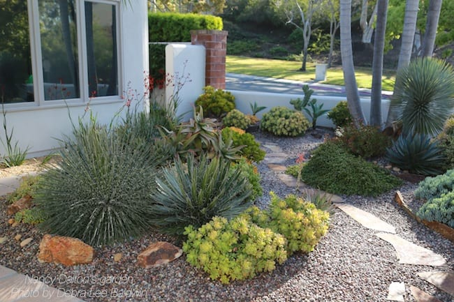
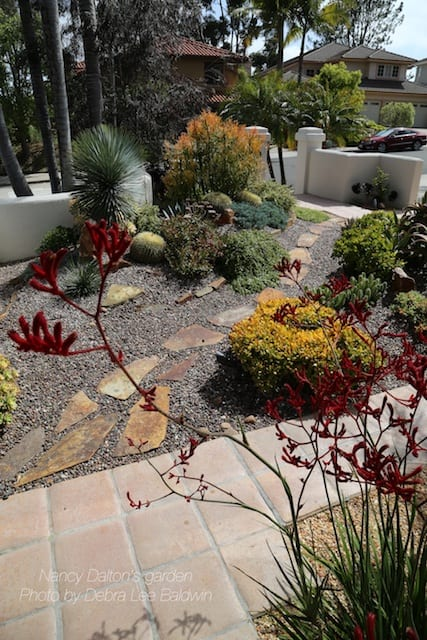
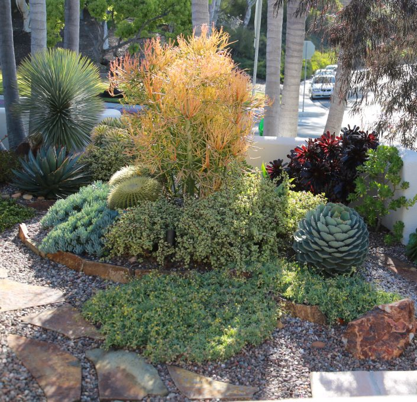
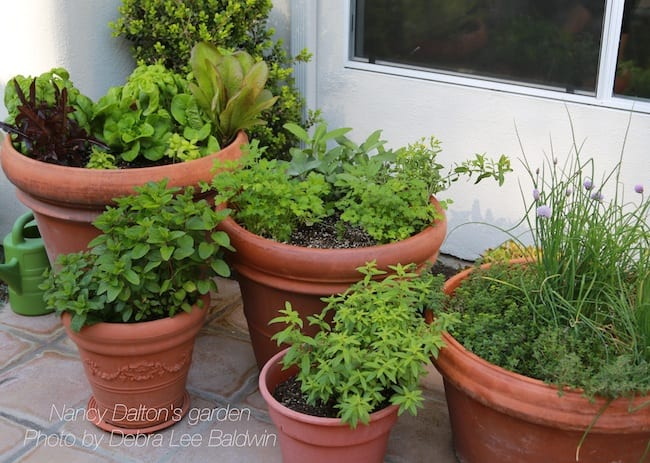
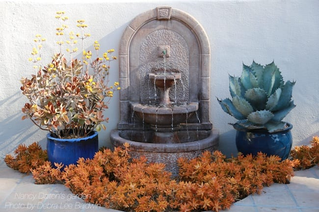
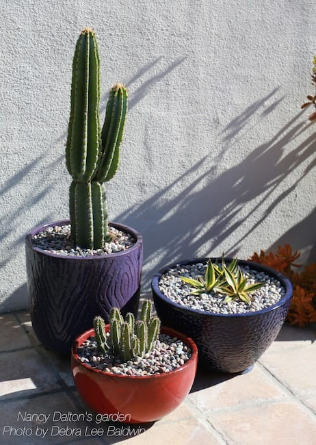
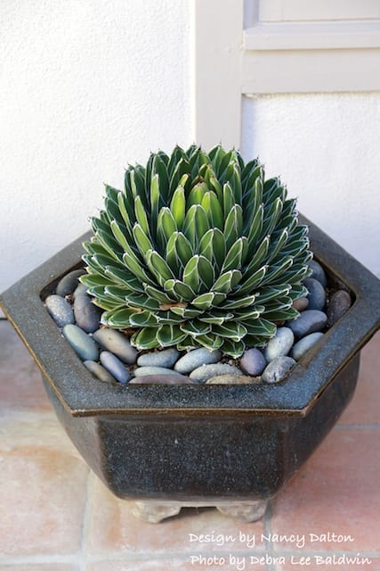
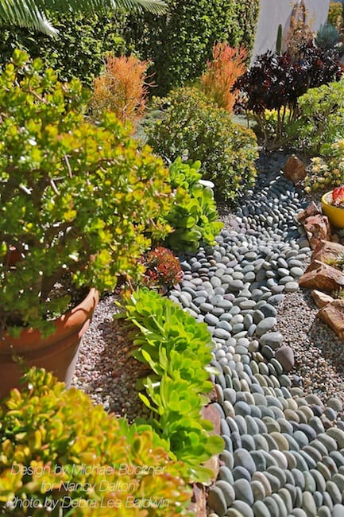
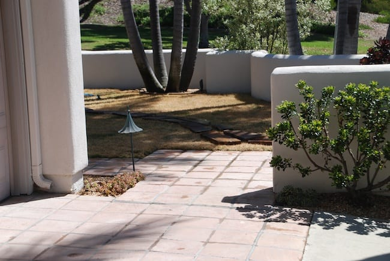

Succulent plant
Also known as Lien Dai, stone flower is a line of succulent plants (English Succulent plant) belonging to the genus Echeveria of the family Crassulaceae. It is estimated that there are about 60 different families of succulents with nearly 400 species, of which more than 90% are distributed mainly in hot areas near equatorial Mexico, South America, Australia and Africa, and some special species of succulents live in Cold regions such as Russia, Japan, and Korea are brought and planted in Da Lat.
How many types of succulents are there in Vietnam?
Stone lotus has appeared in Vietnam for a long time, but in recent years it has become popular with more people with the development of the Internet and online shopping. Through the process of planting, breeding and depending on the soil and climate of each different region, people playing lotus have created thousands of types of lotus with different names.
Each player has a different aesthetic view, so they choose different types of succulents depending on their preferences, personality as well as the meaning of that type of plant. Within the scope of this article, Homegift.vn would only like to list a list of successfully grown succulents that are suitable for the soil in Vietnam, especially in Ho Chi Minh City and Hanoi for your reference and reference. choose.
REPEAT COLORS AND FORMS
By combining agaves with yuccas, the designers used similar-but-different plants to create continuity. The Yucca rostrata at far right repeats the dark green starburst shapes of slender-leaved agaves at middle left. These in turn echo an intriguing aspect of each other: white filaments that curl from leaf margins.
INCORPORATE TEXTURAL PLANTS
Texture is both what's seen up-close, like fuzzy red kangaroo paw flowers, and what's viewed from a distance, like the mounding jade at middle right and 'Sticks on Fire' beyond. Also highly textual are barrel cacti and any plant that shimmers in the breeze---like the Yucca rostrata at left.
SCULPT THE TERRAIN ...
... with berms and valleys. Mounded soil is more interesting than flat and height enhances drainage. Tip: Bring in several yards of topsoil amended with pumice and mound it atop your former lawn or a difficult-to-dig area of compacted dirt. The succulents you plant in fresh soil will quickly take root and thrive.
.jpg)
GROUP PLANTS WITH VARYING HEIGHTS AND SIZES
In Nancy Dalton's garden, Euphorbia tirucalli 'Sticks on Fire' serves as a backdrop for medium-sized succulents such as barrel cacti and variegated elephant's food (Portulacaria afra 'Variegata'). Low-growing blue Senecio mandraliscae and Othonna capensis complete the high-medium-low vignette.
POSITION PLANTS ACCORDING TO WATER NEEDS
Those most prone to rot, such as cacti from to the desert Southwest, tend to do best atop a berm that allows water to drain away from their roots. Finer-leaved succulents tend to dry out more easily and will be happiest around the base of the mound or in a swale. See my article, "How to Water Succulents."
GROW RANGY NON-SUCCULENTS IN POTS
Instead of in the ground, Nancy's herb garden occupies large terracotta pots near her kitchen door. This keeps the plants under control (some, like mints, are invasive) and makes them easy to water, tend, harvest, and replant.
ADD A FOUNTAIN
The sound of splashing water on a patio or adjacent to a garden sitting area blankets neighboring noise and enhances even a small yard's sense of privacy. It also attracts songbirds.
PUT COMPLEMENTARY COLORS TO WORK
Succulents come in all colors, as do glazed ceramic pots, so have fun with them! Here, Nancy contrasted blue and orange. Coppertone stonecrop (Sedum nussbaumerianum) in the bed serves as a ground cover, frames the focal point, and flows around pots of Kalanchoe orgyalis (copper spoons) at left and Agave colorata.
DISPLAY DYNAMIC SUCCULENTS AGAINST WALLS
Nancy lent interest to a white stucco retaining wall with three brightly-glazed pots. They contain a tall, columnar cactus, a clustering euphorbia, and star-shaped Agave lophantha 'Quadricolor'. Find more ideas in my book, Succulent Container Gardens.
SHOWCASE THE SYMMETRY OF SUCCULENTS
Small agaves look great in pots that frame and call attention to their elegant, geometric shapes. Here, Agave victoria-reginae graces a hexagonal pot near Nancy's front door.
INCLUDE A DRY CREEK BED
In a drought-prone climate it's soothing to suggest the presence of water. To create the look of rushing water, designer Michael Buckner lined Nancy's dry creek bed with cobbles turned sideways. Such enhancements can channel water from gutters into the garden and provide access to hard-to-reach areas. See the section in Designing with Succulents on dry creek beds, pp. 56-59
TOP-DRESS BARE SOIL ...
... with crushed rock. It may seem minor, but this often overlooked aspect of design makes a huge difference. A layer of gravel lends a finished look, discourages weed growth, and helps hold moisture in the soil. See my articles, "Ten Reasons Why You Really Need Rocks" and "Why Top Dressing is Essential for Succulents." Special thanks to Deeter-Buckner design for these "before" photos of Nancy's front yard:

Nancy Dalton's s garden won the city of San Diego's drought-tolerant landscaping contest and was on the San Diego Horticultural Society's Spring Garden Tour. Located in Carmel Valley, the garden has a mild, frost-free climate. Landscape designers Samantha Owens of Barrels and Branches nursery and Michael Buckner of Deeter-Buckner Design helped with soil amendments, plant selection, placement, and installation. Nancy herself is knowledgeable about plants and is a hand's-on gardener.